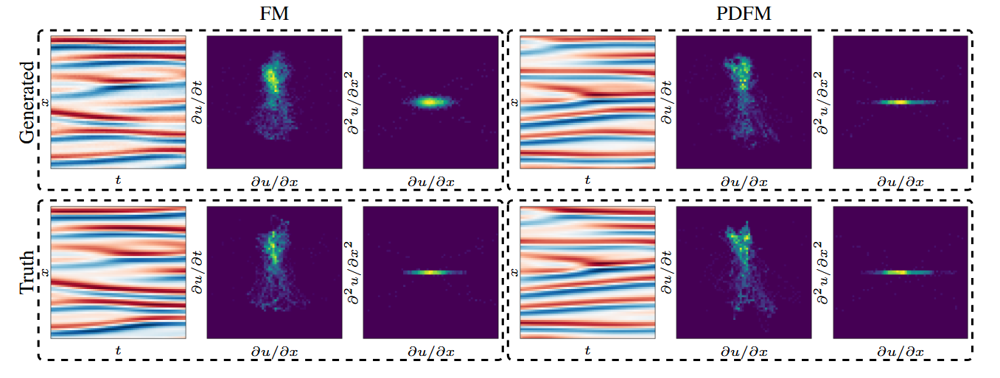
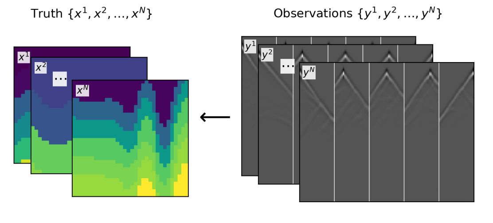
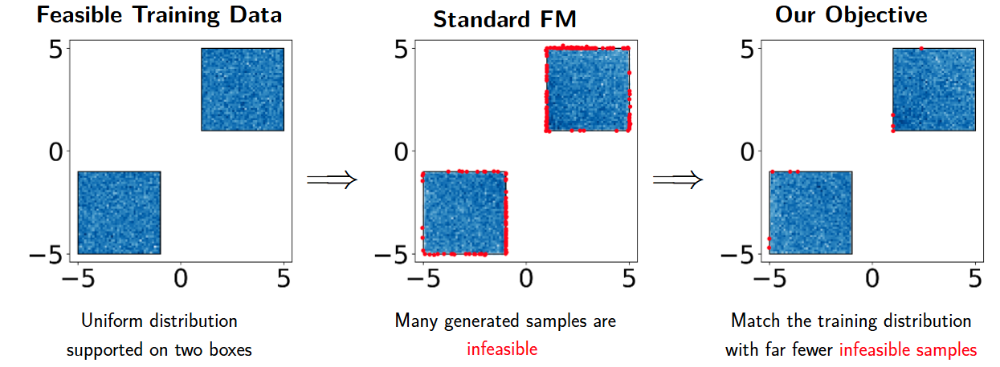
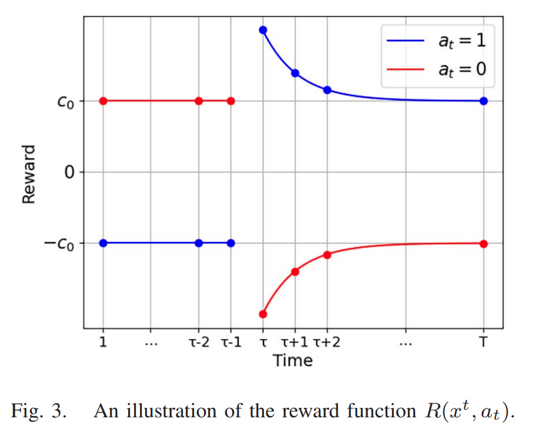
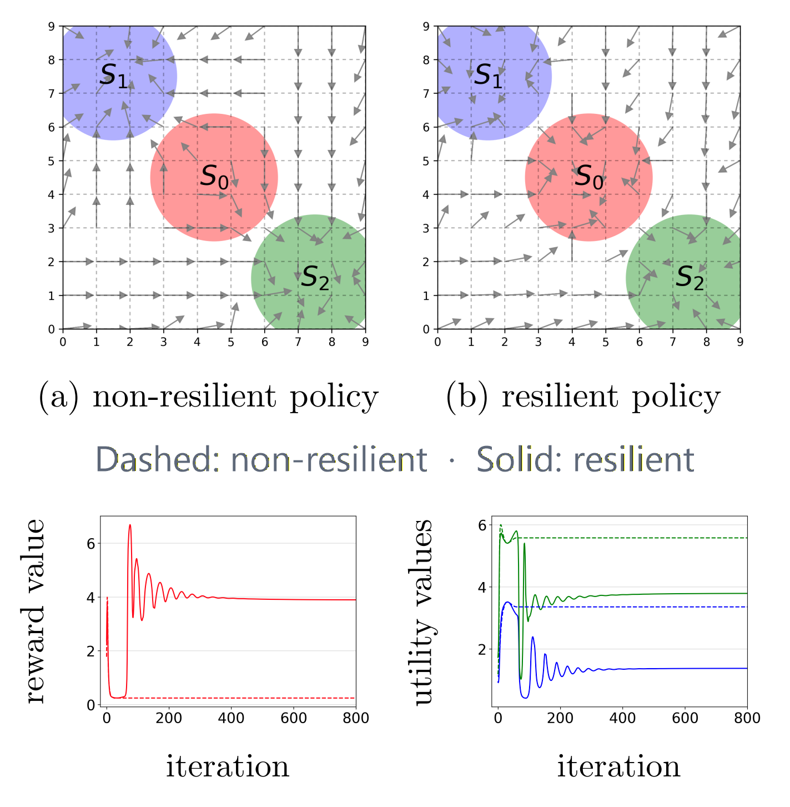

Zhengyan Huan
Department of Electrical and Computer Engineering, Tufts University
Research Interests
My research interests include generative models, reinforcement
learning, and inverse problems. I focus on developing reliable
generative and inference methods for problems involving physical,
structural, or task-specific constraints. Methodologically, I am
interested in flow matching, diffusion models, and learning-based
optimization, with a particular emphasis on
constrained generation and inference.
Selected Projects

Primal-Dual Flow Matching for Sample-Wise Constrained Generation
2026 · Under review
Scientific generative models must match data distributions
while satisfying sample-wise requirements, such as physical
laws or molecular validity, at a desired rate. We develop
Primal-Dual Flow Matching (PDFM), a training-time
method that directly controls constraint-satisfaction
probability while preserving distributional fidelity. PDFM
provides theoretical guarantees on constraint
satisfaction and the optimality gap and requires only a
membership oracle (a yes-or-no feasibility test), without
convexity, differentiable distances, or projections.

Inverse Problems Conditioned on Observation Ensembles: Applications and Methods
2026 · Under review
Inverse problems recover hidden signals from indirect
observations, but standard methods often assume a known/fixed
prior or repeatedly invoke an expensive forward model. We
introduce the
Ensemble-conditioned Inverse Problem (EIP), where
an observation ensemble provides information about its unknown
prior. Our ensemble inverse generative models condition
posterior sampling on both an individual observation and a
learned ensemble summary, enabling non-iterative inference
without the forward model at test time and generalization to
unseen priors.

Constraint-Aware Flow Matching via Randomized Exploration
2026 ·
Paper ·
Poster
Generative models can match a target data distribution yet
still produce samples that violate important rules, such as
physical feasibility or required image attributes. We develop
Flow Matching via Randomized Exploration (FM-RE),
a training-time method that improves constraint satisfaction
without changing sampling. When constraints are available only
through a membership oracle (a yes-or-no feasibility test),
FM-RE uses randomized exploration to learn a constraint-aware
mean flow. It requires neither convex constraints,
differentiable distance functions, nor projection operators.

Policy Gradient and Actor-Critic Approaches to Quickest Change Detection
2026 ·
Paper
Quickest change detection seeks to detect a change point in a
sequential data stream with minimal delay while controlling
false alarms, with applications to cyberattack, solar-flare,
and credit-card-fraud detection. Classical methods often require
unavailable pre- and post-change distributions. We develop one
policy-gradient and two actor-critic methods that learn a
sequential alarm policy from labeled time-series data. By
defining the stopping time as the first alarm time and enforcing
a “keep alarming after the first alarm” structure, our approach
aligns learning with the QCD objective by focusing on the first
alarm rather than independently classifying each time step.

Resilient Constrained Reinforcement Learning
2024 ·
Paper
Constrained reinforcement learning seeks policies that maximize
reward while satisfying requirements such as safety or resource
limits. In practice, these constraint specifications (e.g.,
required thresholds) are often difficult to set and may even
make the problem infeasible. We develop resilient constrained
reinforcement learning, which jointly learns a policy and
adjusts nominal constraint specifications by balancing reward
improvement against the cost of relaxing constraints. This
approach supports applications with uncertain requirements,
including resource allocation and robot monitoring.
Publications
2022
-
Model-Based End-to-End Learning for a Self-Homodyne Coherent System
Zhengyan Huan, Yetian Huang, Yi Lei, Hanzi Huang,
Haoshuo Chen, and Bin Chen
Optics Letters 47 (19), 4901–4904
-
Shaped Four-Dimensional Modulation Formats for Optical Fiber Communication Systems
Bin Chen, Gabriele Liga, Yi Lei, Wei Ling, Zhengyan Huan,
Xuwei Xue, and Alex Alvarado
Optical Fiber Communication Conference, Th3F.4